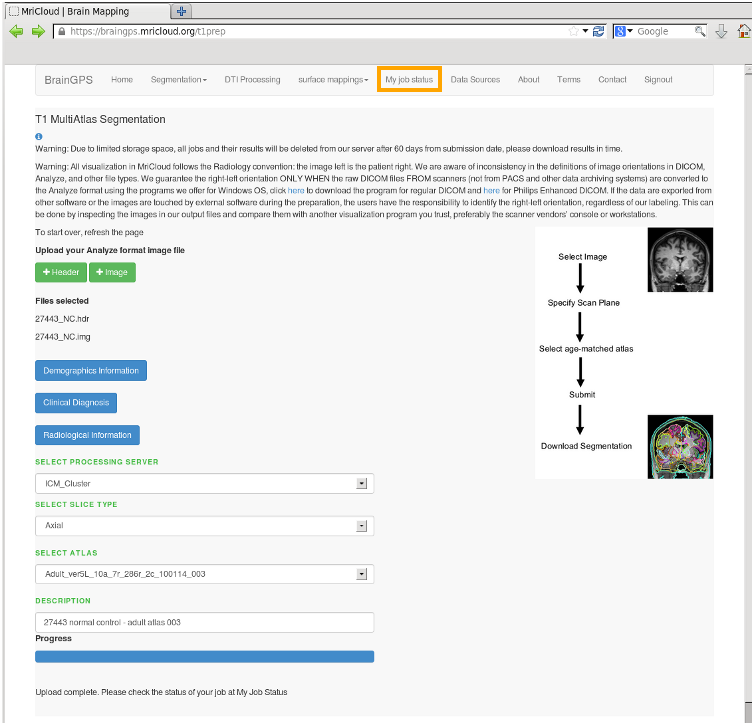
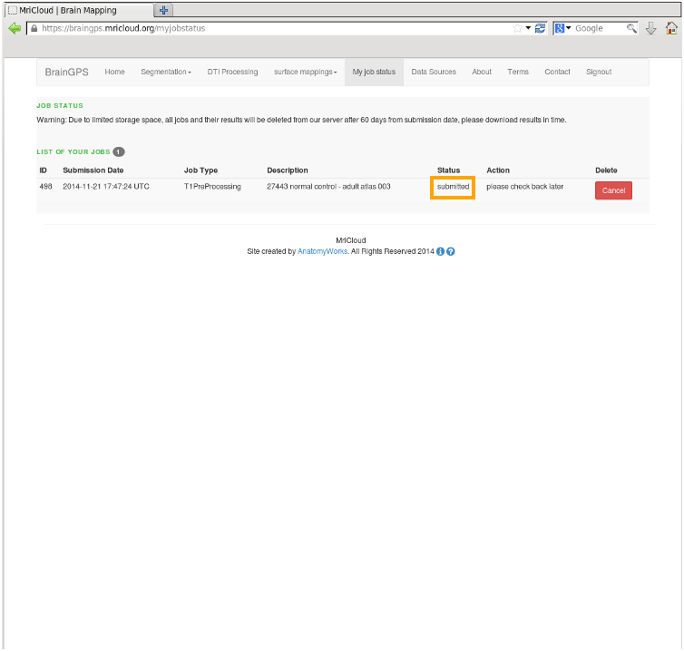
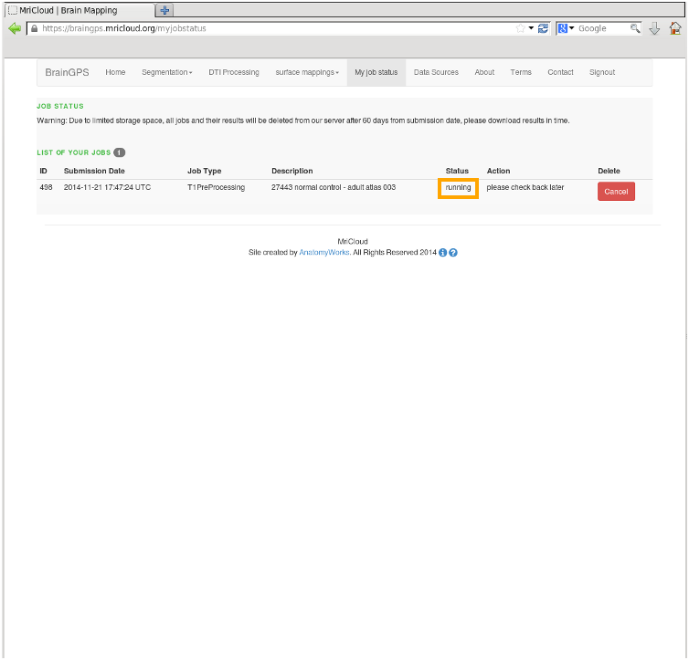
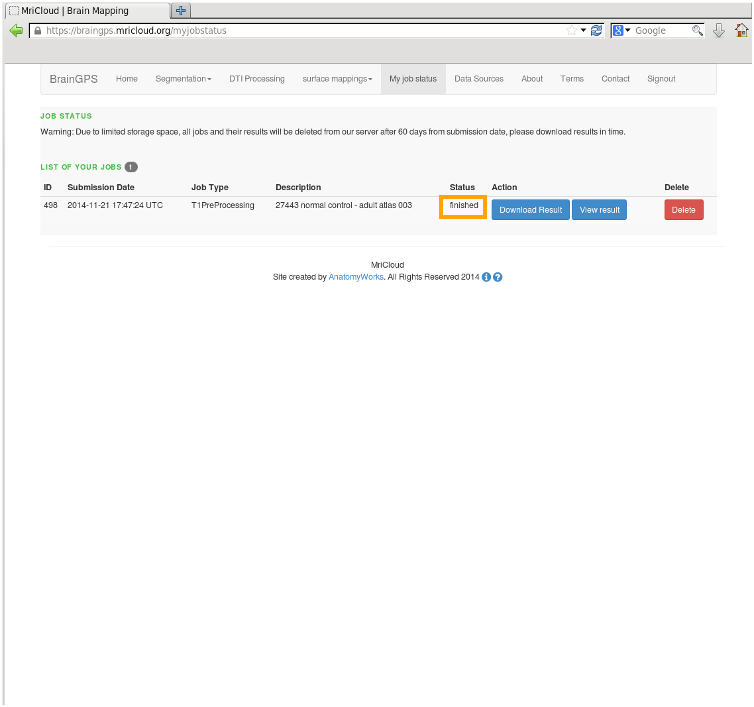

| Step 1 After initiating segmentation the user can track job progress. Select MyJobStatus Menu Item |
 |
| Step 2 The list of user jobs is displayed The Status column shows that the job has been submitted. Other details provided to the user are submission date and job description. A Cancel button is provided should the user wish to cancel a job. |
 |
| Step 3 Refresh the web page to obtain current status. The Status column shows that the job is now running. |
 |
| Step 4 Refresh the web page to obtain current status The Status column shows that the job is finished. Push buttons provide the user the ablility to download results or to view results. A delete push button is provided for the user to clear the list after the user has downloaded/viewed results. |
 |